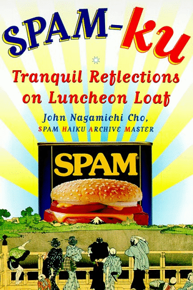

|
By Roy
Williams
"SPAM, SPAM,
SPAM, SPAM, SPAM, SPAM, SPAM, SPAM, lovely SPAM, wonderful SPAM
etc"
It's hardly
poetry, is it? But it did help to make the Hormel Foods Corporation's
luncheon meat reasonably famous during the golden days of Monty
Python's Flying Circus.
The Pythons
have become old and respectable, but the SPAM goes ever on, thanks
to a site on the World Wide Web which is at once a tribute to
what Chambers Dictionary defines as "tinned processed meat made
mainly from pork" and a celebration of haiku, a three-line, 17-syllable
poetry form.
 One
site looks like a labour of love for John Nagamichi Cho, who
opened his haiku SPAM archive under four years ago and has since
received more than 12,000 haiku on the subject. One
site looks like a labour of love for John Nagamichi Cho, who
opened his haiku SPAM archive under four years ago and has since
received more than 12,000 haiku on the subject.
He's even
collected them into a book: SPAM-ku - Tranquil Reflections on
a Luncheon Loaf.
On his archive's
homepage, John writes: "This WWW site was created so that anyone
who comes under the influence of this enigmatic porcine muse can
share his/her poetic epiphany with the rest of the world. Even
if you are not inspired to contribute to the archive, you can
browse through and marvel at the works of genius that SPAM has
motivated in others."
The SPAM haiku
collection is as close as you'll get to literature on the web,
although its success has surprised even its webmaster, as he told
me by email.
Says
John: "Four years ago there was a small collection of SPAM haiku'
(technically senryu) of unknown origin being passed around on
the Internet.
"When I received
them I thought they were the funniest things I'd come across in
quite a while.
"I immediately
wrote a bunch myself and passed them on to a friend, who also
did the same then suggested I start a Web site to collect others'
work. After that it was like in that movie, Field of Dreams: I
built the archive, and the SPAM-ku arrived. In droves.
"Since the
archive opened in June 1995, I've been receiving 10 entries per
day on the average. We have well over 12,000 now. It's been written
up in most major U.S. newspapers, the Independent in the U.K.,
Le Monde in France, etc."
So, what's
it all about?
SPAM
is only cool
Because
of Monty Python
Bacon,
anyone?
Lilymaid,
lilymaid@geocities.com
Of
all the SPAM joints,
she
had to walk into mine.
Play
it again SPAM.
S.
Bookner
Years
of ingestion
Fat chunk in veins dislodges
Soon
a heart attack
Anonymous
SPAM
IS history
The
heroine of all meats -
Treat
her with kindness
Loretta
Forgetta, Lfmst@ham.edu
Bill
said, "I did not
eat
SPAM with that woman, Miss
Lewinsky.
Yeah...right.
CaptainObvious,
CaptainObvious@rocketmail.com
Simmer
in saucepan
SPAM
mixed with herbs and spices
Throw out meat, eat pan
Tom
Elliott, tosh@werple.net.au
Inspired?
John says he will continue to accept these mini odes to SPAM for
as long as they turn up and he has access to the Web. Write
on.
|